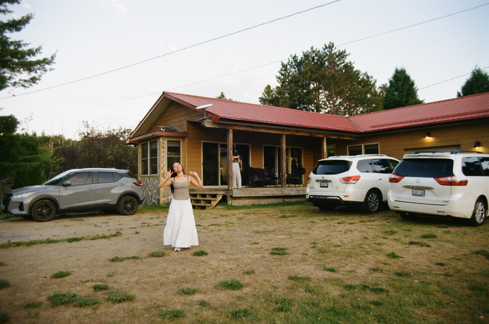
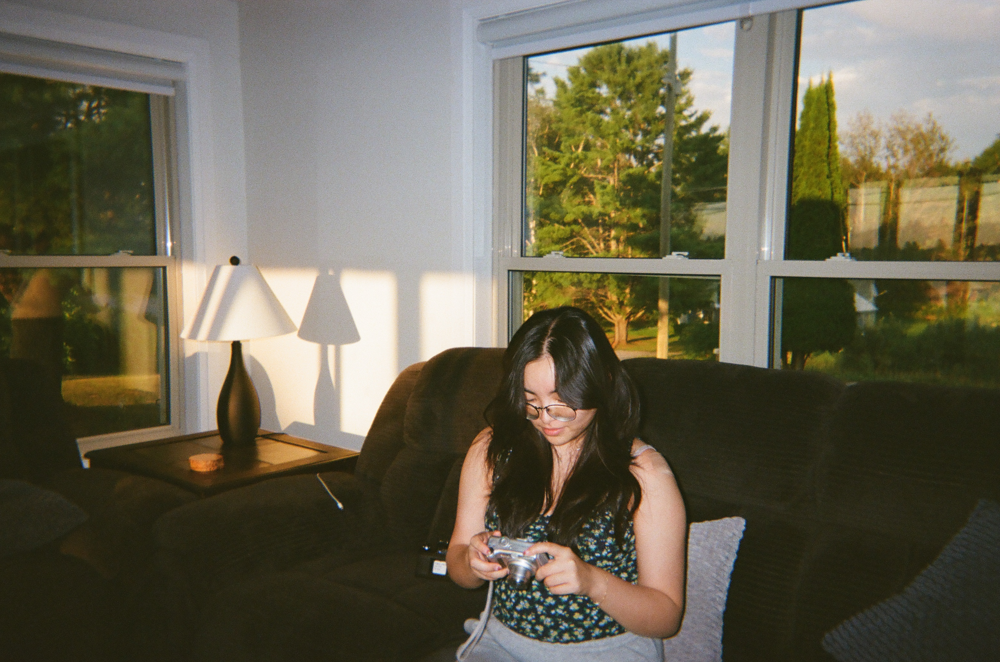
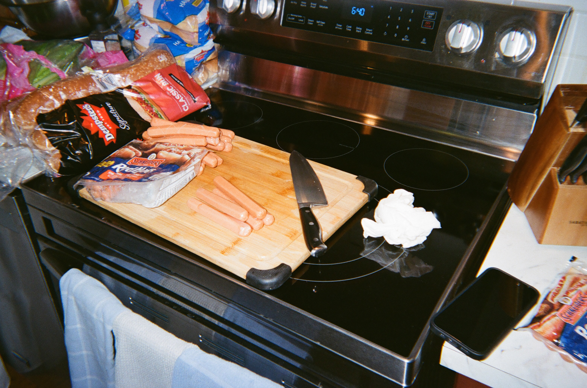

- Life Film Photography
Minolta X-700, 50mm F1.7
FujiFilm Speed 400 - Life film photography captures the quiet moments we often overlook, turning everyday
scenes into small stories worth remembering.


